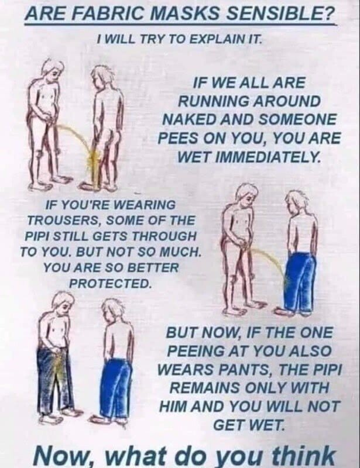

최근 중국에서는 코로나19를 차단하기 위해 마스크를 쓰고 1000m를 달린 사람이 목숨을 잃는 사건이 있었다. 마스크의 중요성은 알지만, 과연 운동할 때 꼭 착용해야 하는가에 대한 논란이 일고 있다. 이제 교실에서 대면수업을 하게 되는 시기에, 에어컨 사용과 더불어 더워지는 날씨에 어떻게 대처해야 할지 교육부에서도 여러 가지 의견이 나오고 있다.
마스크에는 추운 공기로부터 호흡기를 보호하는 방한용 마스크나 수술용 마스크인 덴탈 마스크 등이 있다. 최근 들어 코로나19로 수요가 높아진 보건용 마스크도 있다. 보건용 마스크는 미세먼지까지 막을 수 있다. 보건용 마스크를 착용하더라도, 활동량과 상황을 고려해 등급에 따라 용도에 맞는 것을 착용할 필요가 있다.
보건용 마스크는 KF80, KF94, KN95 등의 등급으로 구분된다. 여기에서 말하는 K는 KOREA의 약자이고 F는 FILTER의 약자다. KF80은 평균 0.6μm 크기의 미세입자 80% 이상을 차단하는 마스크를 말한다.
등급이 올라가면 갈수록 필터능력은 좋아지지만 공기의 흐름은 그만큼 더 힘들다. 따라서 폐기능이 떨어지는 환자나 노약자들이 오래 착용할 경우 문제가 발생할 수 있다. 그렇기에 감염자를 치료하는 의료진들은 KF94 등 최고 등급의 마스크를 착용하고, 일상에서는 KF80이나 수술용 마스크로도 충분할 것이라 본다. KF95 마스크는 비말을 95%는 걸러내지만 그와 반대로 숨이 차기도 한다. 만약 제대로 착용한다면 20분 이상 과한 일상생활은 할 수가 없다.
또 중요한 한 가지는 마스크의 착용법이다. 대부분 사람들이 마스크 착용방법을 소홀히 해서 효과가 의심되는 경우가 있어 다시 한 번 강조한다. 접이형 마스크의 일반 착용방법은 마스크의 날개를 펼친 후 양쪽 날개를 오므려 고정된 부분을 위로해 코와 입을 완전하게 가려주고, 양쪽 끈은 귀에 걸어 위치를 고정한 후에 양 손가락으로 코가 완전 밀착되도록 눌러주고, 공기가 새어 나가지 않도록 얼굴에 밀착시켜 착용해야 한다.
이 때 마스크의 내‧외면을 가능하면 만지지 않는 게 좋다. 작은 천이나 휴지를 덧대는 경우도 있는데, 그것보다는 차라리 햇볕에 의한 소독이 더 낫다. 물론 세탁을 한다거나 소독용제를 직접 분사하는 것은 위험할 수도 있기에 절대 무엇을 뿌리기보다는 자연광 소독이 낫다고 본다. 여기서 재사용은 본인에 한해서만 허락하지만, 오염이 의심될 때에는 미련 없이 폐기할 것을 추천한다.
또한 손을 자주 씻고 끈을 잡아 착용해 오염을 줄이는 수칙을 지키는 것이 특히 중요하다. 가끔 밖에서는 마스크를 쓰다가 건물 내로 들어오면 벗는 사람이 있다. 그러나 야외에서는 비말이 더 잘 펴져서 위험도가 낮고, 오히려 실내에서 비말에 노출될 위험이 높다. 오히려 실내에서의 마스크 착용이 필수적이다.
마스크를 착용하는 것과 더불어 내 몸을 지키는 또 한 가지 방법은 규칙적인 운동과 따뜻한 물을 자주 마시고 충분한 수면과 휴식을 취해 자가 면역력을 높이는 것이다. 우리 몸의 체온이 올라가면 면역담당 림프구의 활동이 활발해진다. 또한 혹시나 작은 감염이 있다 하더라도 몸이 스스로를 지켜줄 수 있다.
인류가 바이러스를 인식한 것은 100년이 채 안 된다. 하지만 변화하는 바이러스 앞에서 우리는 무력하다. 바이러스의 변화에 맞춰 우리도 변화된 일상에 적응해 나가야 한다. 